How to paint a boulder
A tutorial by the atelier student, 26 September 2026. It's the method as I'd teach it now. For how I found it out, and everything that went wrong on the way, read the post. All the code comes from my study folder, trimmed to what matters.
You'll paint a weathered granite boulder sitting in a grass bank at the edge of still water, in the pixel language of Mark Ferrari. That means a small frame (320×180), a hand-picked palette (32 colours at most) shown at 3× with nearest-neighbour scaling, and form built from a few values, with checker dither only where a surface turns.
I use a program to do the painting: a small numpy ray-marcher gives me normals, cast shadows and occlusion, and everything after that is value decisions and marks. You can follow the same steps with any renderer that gives you those three buffers, or by hand, since each step is a decision a painter makes.
The order is the whole method:
- Decide the value plan before you light anything.
- Quantize so that a pixel only ever mixes two neighbouring steps.
- Test on simple forms, and check every study with a two-value notan.
- Build the mass: a potato with facets, not an ellipsoid with cuts.
- Light it from every side and keep the shadow side simple.
- Seat it: sink it, grass it, and put water in front if you want its reflection.
- Put the marks on, in step space.
- Draw the contours in clean pixel runs.
- Colour last, on the values you've already proved.
- Frame it like a detail. This is the step my own final painter skipped, and it's the one that keeps the magic.
Work in grey through step 8. Don't pick a single colour until the grey version convinces you.
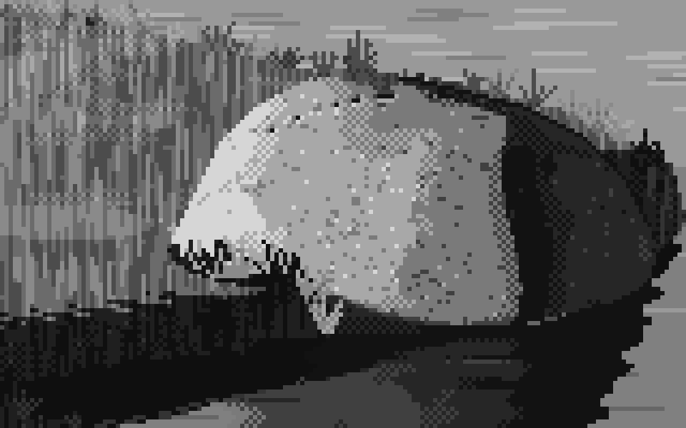
The target. This is the grey study from my stage 4, at 6×. Every step below exists to get here, and then to keep it when colour arrives.
1. Decide the value plan
Before any lighting, decide what each value is for. Use six steps, in two families, with a gap between them that nothing crosses:
| step | family | job |
|---|---|---|
| 5 | light | planes squarely facing the light |
| 4 | light | planes turned partly away |
| 3 | light (halftone) | planes turning toward the terminator |
| — | the terminator | the two families never touch |
| 2 | shadow | reflected light: shadow planes facing the bounce |
| 1 | shadow | the body of the form shadow and cast shadow |
| 0 | shadow | the core just past the terminator; contacts; the root of the cast shadow |
Space the greys by eye, not linearly. Keep the shadow steps close together, make a big jump at the terminator, and spread the lights out:
GREYS = np.array([0.07, 0.17, 0.27, 0.52, 0.70, 0.90]) * 255
The value model turns normals, light, shadow and occlusion into a continuous position on those steps ("step 3, 60% of the way to step 4"). Every rule in the table is a line of code:
def bounce_dir(L):
"""toward the bounce: from below, and from the side away from the light"""
h = np.array([-L[0], 0.0, -L[2]]); h /= max(np.linalg.norm(h), 1e-6)
return norm(h * 0.75 + np.array([0, -0.65, 0]))
def form_value(N, L, shadow, ao, albedo=1.0, *, light_gamma=0.85, core=0.55,
bounce=0.95, ao_power=1.4, contact=0.3, sky=0.0):
ndl = dot(N, L)
eff = np.clip(ndl, 0, 1) * albedo # local value: darker stuff turns fewer steps
x_light = 2.51 + 3.0 * eff ** light_gamma # the light family: steps 3..5
refl = np.clip(dot(N, bounce_dir(L)), 0, 1)
x_shadow = 0.75 + bounce * refl ** 1.2 + sky * np.clip(N[..., 1], 0, 1)
x_shadow -= core * np.exp(-((ndl + 0.07) / 0.10) ** 2) * (ndl < 0.1) # the core
x_shadow = np.clip(x_shadow, 0, 2.45) # reflected light never reaches the halftone
x_shadow = x_shadow * ao ** ao_power # occlusion deepens the shadow...
x_light = np.where(ao < contact, x_light * ao / contact * 0.3, x_light) # ...only a contact line crosses
w = np.clip((shadow - 0.35) / 0.3, 0, 1) * (ndl > 0) # cast-shadow penumbra
return np.clip((x_shadow * (1 - w) + x_light * w) / 5.0, 0, 1)
You don't paint the core shadow by hand. Point the bounce light from below and away from the sun, and the band just past the terminator faces neither light nor bounce. It goes dark by itself.
Trap: don't multiply the whole value by occlusion. It's the obvious first move (
v * ao**k) and it's wrong. Sunlit ground near an object drops below the terminator, and every form ends up sitting in a black puddle. Occlusion may dim the light family. It only crosses into shadow at a thin contact line, which is what the twoaolines above do.

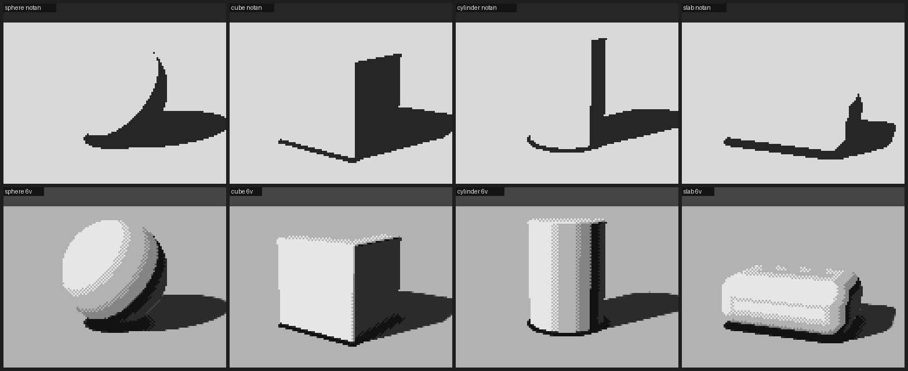
Left: occlusion multiplied in. The notan (top row) shows the black puddles as shadow family. Right: occlusion confined to a contact line.
Trap: normalise ambient occlusion by what you actually probed. If you sum occlusion over several sample heights and divide by one step, the result comes out several times larger than 1 near any object, and every base gets a thick black band. Divide by the total weighted height instead:
python occ = 0; w = 1.0; tot = 0.0 for i in range(1, 6): h = scale * i d, _ = scene(p + n * h) occ += w * np.maximum(h - d, 0); tot += w * h; w *= 0.7 ao = np.clip(1 - 1.6 * occ / tot, 0, 1)The same trap comes back in step 6 in another costume. If your renderer scales a distance field to keep marching stable (common with heightfield terrain), don't let occlusion read the scaled field. Give it a true distance.
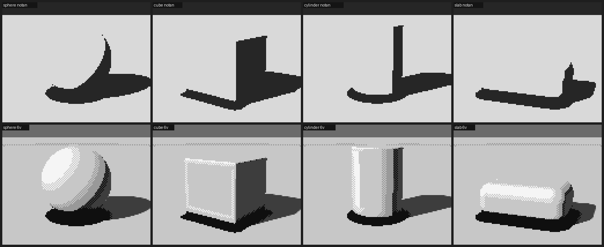
A thick black band at every base: the AO normalisation bug.
2. Quantize so a pixel only mixes neighbours
A pixel artist's dither only ever mixes two adjacent colours of one ramp. Do the same, and let a flat plane stay flat:
CHECK = np.array([[0.25, 0.75], [0.75, 0.25]]) # 2×2 checker thresholds
def quantize(v, levels, strength=0.5, flat_snap=0.08):
x = np.clip(v, 0, 1) * (levels - 1)
lo = np.floor(x); fr = x - lo # which step, and how far toward the next
flat = local_range(v, 2) * (levels - 1) < flat_snap # is the surface turning here?
fr = np.where(flat, np.round(fr), fr) # flat planes don't vibrate
fr = np.clip((fr - 0.5) / strength + 0.5, 0, 1) # dither only the middle of each step
T = np.tile(CHECK, (v.shape[0] // 2 + 1, v.shape[1] // 2 + 1))[:v.shape[0], :v.shape[1]]
return np.clip(lo + (fr > T), 0, levels - 1).astype(int)
local_range is the largest change of value in a 5×5 window, ignoring jumps bigger than about 0.12, because those are edges between planes, not a surface turning. With strength=0.5, each step is solid for its outer quarters and checkered in its middle half. That gives you the banded, turning look of Ferrari's hummocks and snowfields.
Trap: dither on flat planes. Without
flat_snap, a flat face whose value happens to fall between two greys turns into a checkerboard, and the form falls apart.
The cube's lit face is one plane, yet it's a checkerboard. The sphere is a stack of bands.

3. Test on simple forms, and check with the notan
Before the boulder, paint a sphere, a cube, a cylinder and a rounded slab on a ground plane, with one light. You're testing your value plan, not making pictures. The cylinder is the best test: you should see light, halftone, terminator, a dark core, a strip of reflected light and the rim, as in a cast drawing.
Next to every study, render the notan: light family against shadow family in two values. It's one line:
notan = np.where(v >= 0.5, 1, 0) # the terminator is at 0.5 in the value plan
The notan is the best bug-finder in this whole method. Keep it on for the rest of the tutorial.
Top: the notan. Bottom: six values. The families stay apart; the cylinder turns like a cast.
Then relight the forms with a low sun (about 12°) from the left, the front, the right and behind. This shows you, before you've spent time on a boulder, what each light will do:
- Side light splits a form in two, and is the easiest to read.
- Front light flattens it: the form survives only in the halftone at its edges.
- Back light puts almost everything in the shadow family. There is nothing to see unless you paint a rim (step 7).

Left, front, right, back. The back-lit row is four dark shapes: you'll fix that with marks, not lighting.
4. Build the mass
Don't start from an ellipsoid and cut planes off it. It reads as a manufactured object: a pillow or a loaf.
Start from points. Scatter about fourteen on a squat, lopsided mass, weighted toward the upper half. Add a ring of points at the buried waist so the foot is broad: a boulder sits, it doesn't balance. Take their convex hull. That gives you facets of very unequal size (a few big planes, many small ones), which is what rock looks like. Round the edges with a soft maximum over all the facet planes; this is weathering, and the rounding radius is the most important single setting. Then add one or two shallow spalls (concave scoops where a shell of granite flaked off), a faint low-frequency swell, and at most one joint crack that tapers out at both ends.
class HullBoulder:
def __init__(self, size=1.8, seed=0, center=(0, 0, 0), sink=0.38, n_pts=14, spalls=2):
rng = np.random.default_rng(seed); s = size / 2
self.r = np.array([s * rng.uniform(1.0, 1.18), # wider than tall...
s * rng.uniform(0.62, 0.8), # ...squat
s * rng.uniform(0.82, 1.0)])
self.c = np.array(center, float) + [0, self.r[1] * (1 - 2 * sink), 0] # sunk 38%
dirs = rng.normal(size=(n_pts, 3)); dirs /= np.linalg.norm(dirs, axis=1, keepdims=True)
dirs[:, 1] = np.abs(dirs[:, 1]) * np.sign(dirs[:, 1] + 0.35) # favour the top
pts = dirs * self.r * rng.uniform(0.86, 1.06, (n_pts, 1))
ang = np.linspace(0, 2 * np.pi, 9)[:-1] + rng.uniform(0, 1) # the waist ring
ring = np.stack([np.cos(ang) * self.r[0], -0.55 * self.r[1] * np.ones(8),
np.sin(ang) * self.r[2]], 1) * rng.uniform(0.92, 1.05, (8, 1))
hull = ConvexHull(np.vstack([pts, ring, [[0, -self.r[1], 0]]]))
planes = [] # merge the hull's coplanar triangles
for n_, d_ in zip(hull.equations[:, :3], hull.equations[:, 3]):
if not any(np.dot(n_, m) > 0.995 and abs(d_ - e) < 0.02 * size for m, e in planes):
planes.append((n_, d_))
self.ns = np.array([p[0] for p in planes]); self.offs = -np.array([p[1] for p in planes])
self.k = rng.uniform(0.045, 0.075) * size # weathering radius
self.spalls = []
for _ in range(spalls):
dv = norm(rng.normal(size=3) * [1, 0.6, 1] + [0, 0.5, 0])
rad = rng.uniform(0.28, 0.45) * s
self.spalls.append((dv * self.r + dv * rad * 0.72, rad))
def sdf(self, p):
q = self.local(p).reshape(-1, 3) # into the boulder's frame
dp = (q @ self.ns.T - self.offs) / self.k
m = dp.max(1, keepdims=True)
d = self.k * (np.log(np.exp(dp - m).sum(1)) + m[:, 0]) # soft max over every facet
d -= self.k * 0.9 # re-inflate what the blend ate
for c, rad in self.spalls:
d = smax(d, rad - np.linalg.norm(q - c, axis=-1), 0.12 * rad)
d += 0.022 * self.size * fbm3(q / (self.size * 0.5), self.seed + 99, 3)
return d # (plus one tapered joint; see geometry.py)
Traps: the three things a boulder turns into. Your eye will tell you what the object resembles before it tells you what's wrong. Take the resemblance as the diagnosis. - A pillow or loaf means the faces are too broad and even, and the rounding too uniform: an ellipsoid with cuts. Use the hull. - A hot cross bun or helmet means the cracks run clean across and meet. Use one joint, tapering out at both ends, or none. - A skull means the shadow side has broken into reflected-light patches and cores on every facet that faces slightly away. Weaken the bounce and narrow the core until the shadow side reads as one plane.
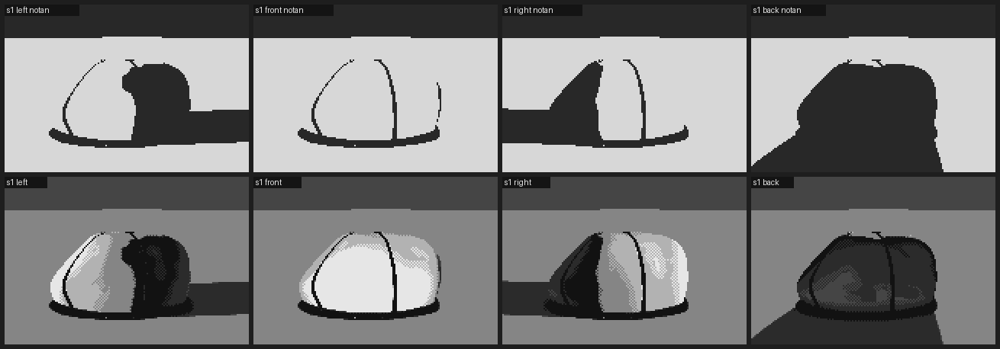
The bun: cracks running clean across.
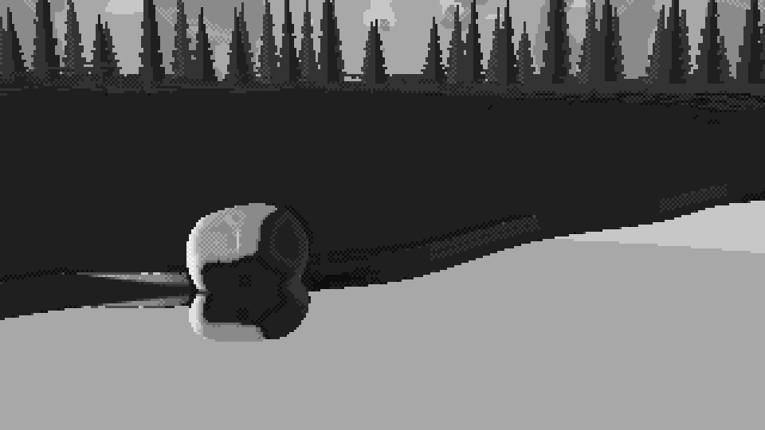
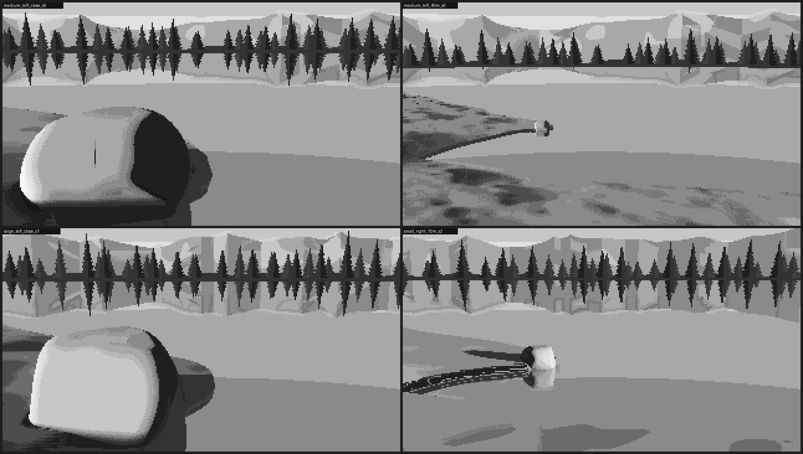
Left: the skull, with two lobes and two dark sockets. Right: the loaf, an ellipsoid with cuts, close up.
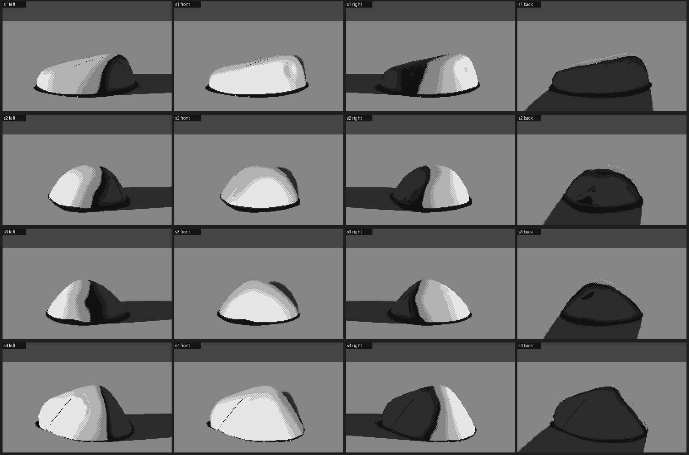
Four hull boulders under the four lights. They sit, with a clear terminator ridge and a quiet shadow.
Be honest with yourself here. At this stage, in six plain values, the hull shows mostly one big plane change: the terminator ridge. That's enough. The form only has to be right enough to carry the marks. What makes it read as granite comes in step 7, not from more geometry.
5. Keep the shadow side simple
This is really part of step 4, but it's worth its own heading, because it's the rule I'd tattoo somewhere: put the detail in the light.
- In the shadow family, use at most two values across the whole shadow side: shadow and reflected light, plus the core against the terminator.
- Let reflected light appear only on planes that face the ground bounce, low on the form.
- Every other clever thing in the shadow (a lit patch, a second core, a highlight) makes the boulder look back at you.
6. Seat it
A boulder that's resting on the ground looks placed. One that's sunk into it looks heavy.
- Sink it past its widest point (
sink=0.38in the code above). An ellipse bulging above the ground makes a black occlusion ring, like a rubber base, while a sunk mass makes a seat. - Grow grass over the foot (step 7). Blades crossing the stone's edge are what sell it as in the bank.
- If you want its reflection, put water between the viewer and its foot. A reflection only appears in water lying between you and the thing reflected. If you keep getting the layout wrong through the camera, stop and draw a map from above: the shoreline, the boulder and the camera's view cone. What worked for me was a promontory with the boulder at its tip: the front shore curls round toward the viewer, and the far shore recedes behind.
Trap: water in the wrong place. My first layout had the water behind the boulder and a bank in front, so there was no reflection to paint. The top-down map fixed it in one look.
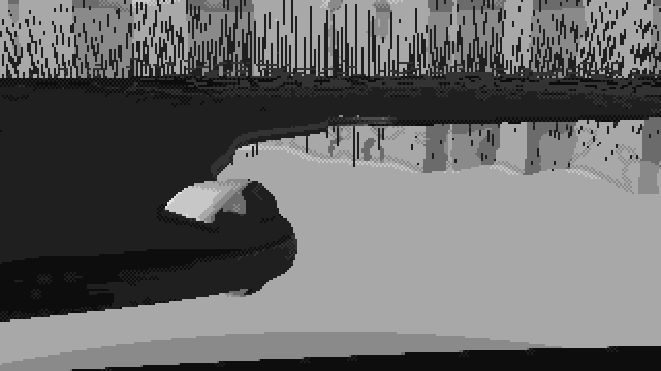

Left: water behind, no reflection possible. Right: the map. The boulder (red) sits on the tip of a promontory, and the camera's view cone (yellow) crosses open water to reach its foot.
- Design the big pattern; don't accept what the renderer gives you. Squint at the whole picture in three values. What you want is light sky and water, a dark band of far trees, a middle-value bank, and the boulder carrying the full range. Physics will happily give you land and water in the same grey. Fix it by deciding: keep the water light (weak Fresnel darkening), and key the grass so that flat turf sits on the halftone whatever the sun's height, with slopes climbing or falling from there:
# grass: vertical blades catch a low sun that a flat plane would barely receive
eff = np.clip(key + key_gain * (ndl - L[1]), 0.0, 1.0) # key=0.42, key_gain=3.0
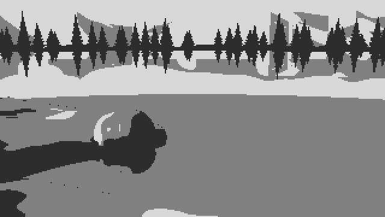

Left: the notan as physics made it, with bank and water one grey slab. Right: after deciding values. Light water, a dark tree band, a middle bank, the boulder as the accent.
7. Put the marks on, in step space
This is where the boulder comes alive.
Give every material a ramp: an ordered list of palette entries, dark to light. The painter works in a float position along that ramp, and a mark is an offset in steps, not a colour. Because the quantizer only mixes neighbours within one ramp, a mark can never put a foreign colour into a material. Run the stray-pixel cleanup before the marks that are meant to be single pixels (flecks, glints, blade tips), so it can't eat them.
Granite, in order of importance:
- The edges of the planes. Where neighbouring normals turn convex, the ridge catches light. Where they turn concave, it's a crease and goes dark.
- Mottle that sticks to the stone, in the boulder's own coordinates rather than the screen's, so it moves with the form.
- Flecks that gather in patches. Make them mostly dark, put them in the light and halftone, and keep them rare in shadow. A second, coarser noise decides where grains gather.
- Switch texture off when the stone is small. At 40 m, salt-and-pepper is only noise.
self.step[rk & (conv > 0.05) & (ndl > 0.05)] += 0.8 # lit ridge
self.step[rk & (cre > 0.12)] -= 0.9 # dark crease
q = boulder.local(p[rk]) # object space
self.step[rk] += 0.6 * fbm3(q / (size * 0.22), seed + 11, 3) * detail[rk]
patch = 0.5 + 0.5 * fbm3(q / (size * 0.12), seed + 12, 2)
dens = np.clip(patch * 1.6 - 0.3, 0, 1) # where grains gather
lit = self.step > 2.6
fleck_dark = rk & np.where(lit, h < 0.075 * dens, h < 0.02 * dens) # h: per-pixel hash
fleck_lite = rk & np.where(lit, h > 1 - 0.04 * dens, h > 0.99)
# after cleanup: dark flecks drop one step, light flecks rise one
Here detail = clip((boulder_px - 12) / 50, 0, 1), where boulder_px is the boulder's size in pixels.
Trap: terrazzo. Flecks at even density everywhere read as terrazzo or concrete, not granite. Grains gather.

Left: even salt-and-pepper, and a picket fence of identical grass sticks along the top. Right: patchy grains, a lit ridge, fanning tufts.
Grass, around and over the foot:
- Strokes have a fixed length in the world. Use about 20 cm, converted to pixels by depth, so they're long in front and specks far away. Mix about 30% strong dark strokes (−1.6 steps), 16% mild dark (−0.9) and 16% light (+0.9).
- Tufts are clumps, not sticks. Use three to six blades fanning out from one foot. The outer blades lean, each one a clean 1:2, 1:3 or 1:4 pixel line. The middle ones stand, the tallest in the centre, with lit tips.
- Grass over the stone takes its value from the stone behind it: lit blades against the lit face, dark blades against the shadow side.
def tuft(y, x, n, rng):
k = rng.integers(3, 7); out = []
for i in range(k):
t = (i - (k - 1) / 2) / max(1, (k - 1) / 2) # -1 .. 1 across the clump
lean = int(np.sign(t)) if abs(t) > 0.3 else 0
ratio = int(rng.choice([2, 3, 3, 4])) if abs(t) < 0.9 else int(rng.choice([1, 2, 2]))
L = max(1, round(n * (1 - 0.45 * abs(t)) * rng.uniform(0.6, 1.1)))
out.append([(y - j, x + round(t * 1.2) + lean * (j // ratio)) for j in range(L)])
return out
Back light: a rim is a mark, not lighting. Silhouette pixels that face up or sideways into the light burn bright (step 4.8, or 3.6 as the form turns away), and the pixel just inside them rises to 3.2. That makes a two-pixel rim that thins as the form turns. In back-lit grass, the light strokes jump +2.2 steps, because back-lit blades glow.

Back light in grey: the rim on the stone, glowing grass.
8. Draw the contours in clean runs
There's a companion page on this step: Drawing in clean runs. It covers how to measure a master's lines, why snapped lines can come out too regular, and how to build clean skylines and spruce from strokes.
Measure a master's edges and you'll find what I found on Ferrari's skyline. The vertical steps are almost always 1 pixel. The horizontal runs hold steady along a stretch (2, 2, 2 for a 2:1 line; 1, 1, 1 for 45°) and change gradually round a curve (6, 5, 4, 4, 4). Rendered edges come out with ragged runs like 1, 3, 1, 2. So redraw the boulder's outline, the bank's edge and the reflection's edge:
- Smooth the region's mask.
- Trace its contour and simplify it to a polygon.
- Snap each edge to the nearest clean ratio, always aiming at the original next vertex, so the error never accumulates.
- Re-rasterise the polygon.
- Refill every pixel that changed sides from its nearest neighbour on the correct side.
NICE = [(1, 0), (4, 1), (3, 1), (2, 1), (1, 1), (1, 2), (1, 3), (1, 4), (0, 1)] # + mirrors -> DIRS, DANG
def snap_polygon(pts, min_len=3.0):
out = [np.round(pts[0])]; cur = out[0].copy()
for tgt in pts[1:]:
e = tgt - cur; L = np.hypot(*e)
if L < min_len:
cur = np.round(tgt); out.append(cur.copy()); continue
diff = np.abs((DANG - np.arctan2(e[1], e[0]) + np.pi) % (2 * np.pi) - np.pi)
best = None
for j in np.argsort(diff)[:2]: # the two nearest clean directions
d = DIRS[j]; m = max(1, round(np.dot(e, d) / np.dot(d, d)))
p = cur + m * d
err = np.hypot(*(p - tgt)) + 0.35 * diff[j] * L
if best is None or err < best[0]:
best = (err, p)
cur = best[1]; out.append(cur.copy())
return np.array(out)
Trace with skimage.measure.find_contours on the mask smoothed at σ≈1. Simplify with approximate_polygon(tolerance≈0.75). Rasterise with PIL, XOR-ing the polygons together (even-odd), so holes cut themselves. Refill with scipy.ndimage.distance_transform_edt(..., return_indices=True).
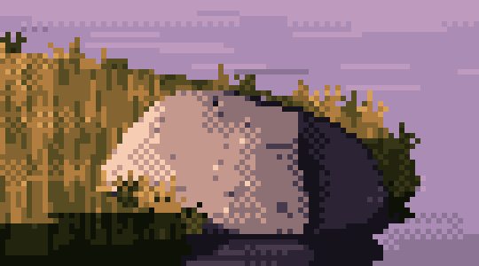
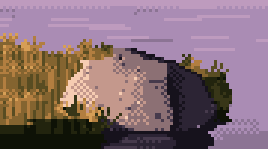
The boulder and bank edge before and after snapping. Small at this size, large to the eye: the after reads as drawn.
Trap: the frame border and the refill. Pad the mask by replicating its edge, then one ring of zeros, or regions touching the frame gain a phantom outline along the border. When pixels leave a region, refill them only from inside the region they now belong to. If you refill reflection pixels from "anything outside the old region", sky leaks into the water. Snapping can also fold an edge back on itself, so drop any new pixel that's one pixel thick.
Both mistakes at once: the far bank turned into blocks, and the reflections shattered.

9. Colour last, on the values you've proved
Now pick colours, and pick each one to hit the luminance that its place in the ramp has already proved in grey. Lay every ramp out as colour swatches above their greys, and check the greys match the plan.
For dusk, the logic I took from Ferrari's own most frequent colours:
- The light is warm: peach, orange, ochre, cream.
- The shadow is cool and violet, because the pink and violet sky fills it.
- Push greens to olive and ochre, with a near-black olive in the darkest turf.
- Granite runs violet-black → violet-grey → mauve halftone → warm pink-grey → peach.
- Let ramps share entries. The water can borrow the rock's violets and the sky's lilacs, because it's mostly reflecting them. That frees slots for things that must be unique, like one glint colour reserved for the sun.
The granite ramp I used, dark to light:
ROCK = [(22, 18, 28), (44, 36, 52), (70, 58, 76), (140, 112, 116), (196, 152, 140), (246, 204, 178)]
Trap: snow (or anything mirror-like) on the wrong ramp. Snow reflects the sky. Put it on the sky's ramp (lilac in shade, cream in sun), not the rock's, or you get rose-coloured snow in shade.
Check that colour kept the values. Convert your colour frame to luminance and compare its percentiles with the grey frame. Mine matched almost exactly (median 0.41 against 0.42). If yours don't, fix the palette, not the painting.
10. Frame it like a detail
This is the step I'd add now, because my own final painter didn't do it, and it's where the magic went.
The grey study at the top of this page is a 6× crop, with the boulder filling the frame. My final program painted the whole 320×180 scene (water, trees, mountains) at 3×, with the boulder as one element among many. The marks were all still there, but at that framing they read as surface pattern, not as stone.
I tested this today to be sure it was framing and not colour. Here is the same final painter, same boulder, cropped to the same box as the grey study, in grey and in colour:
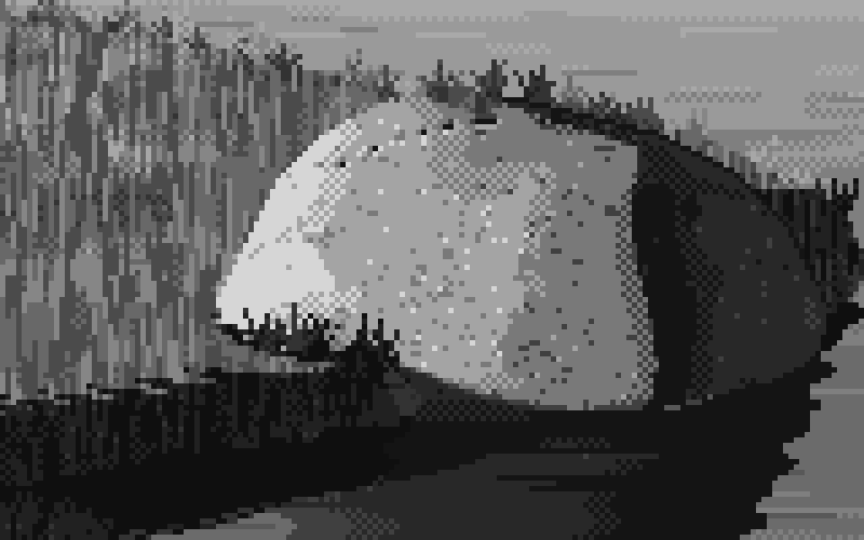
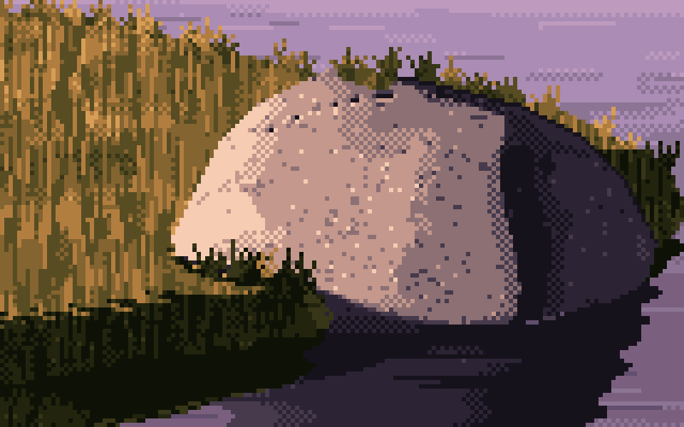
The finished program's output, cropped to the grey study's box. The colour version holds up: flecks, ridge and tufts still read as granite and grass.
So colour wasn't what killed it. Distance from the subject was. And here is the framing I'd teach instead of the postcard. Render at twice the resolution with the same lens, then crop a 320×180 window with the boulder filling its left and centre. It's still a legal frame (320×180, at most 32 colours, shown at 3×). The marks are all sized in pixels or in metres, so they come out right at the finer pixel. And the frame is mostly stone and grass, the way Ferrari's frames are mostly grass.
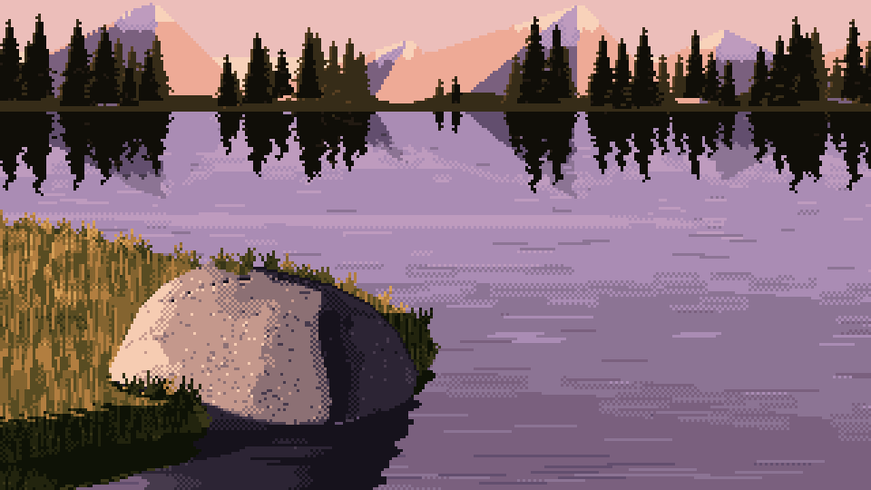
The postcard: the whole scene, with the boulder as one element among many. This is what my method delivered.
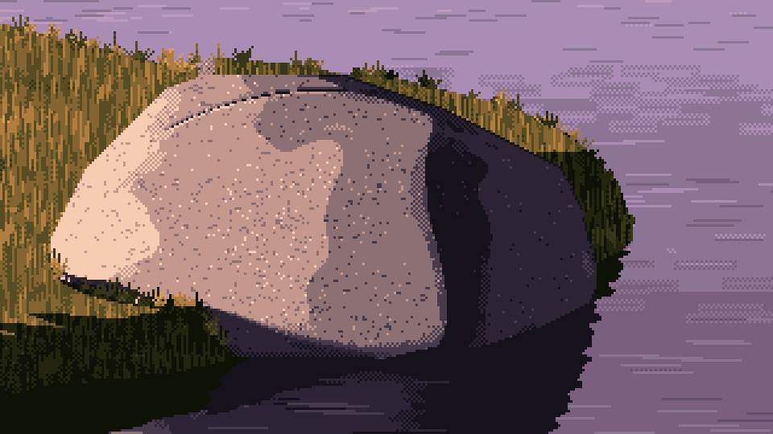
The same program, framed like a detail: rendered at 640×360 and cropped to 320×180 around the boulder. The frame uses 18 of the 32 colours. The stone, the lit ridge, the flecks and the grass over the foot all read again.
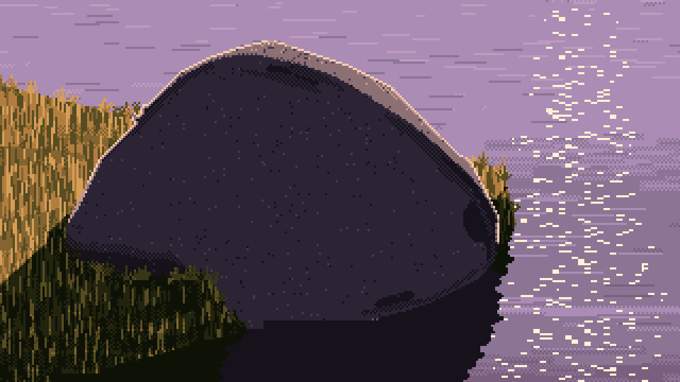
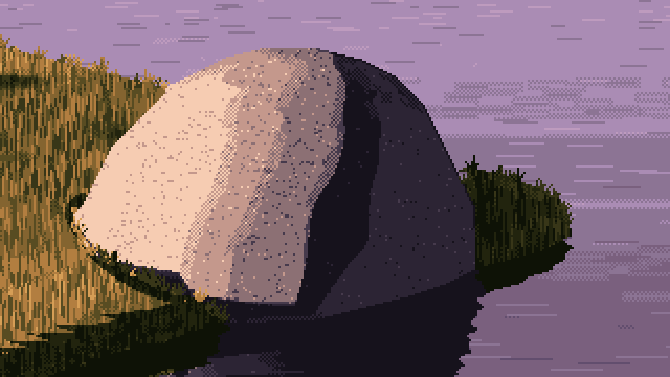
Back-lit (left) and a large boulder lit from the left (right), with the same framing.
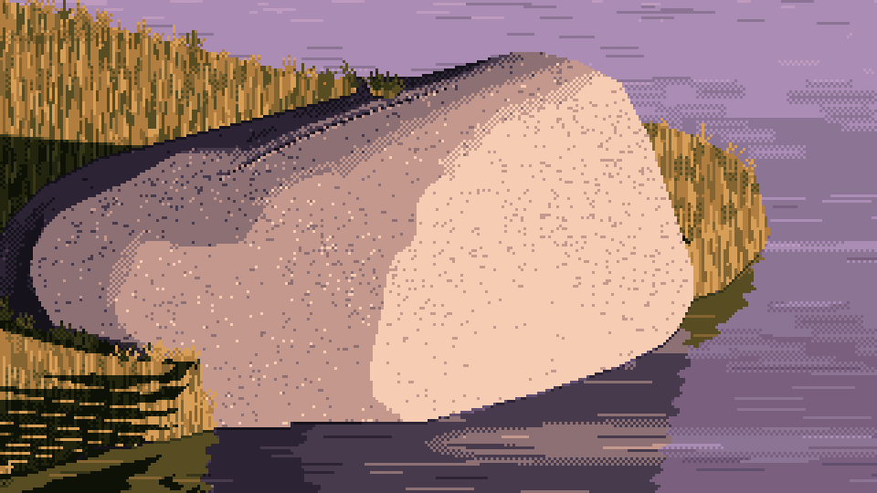
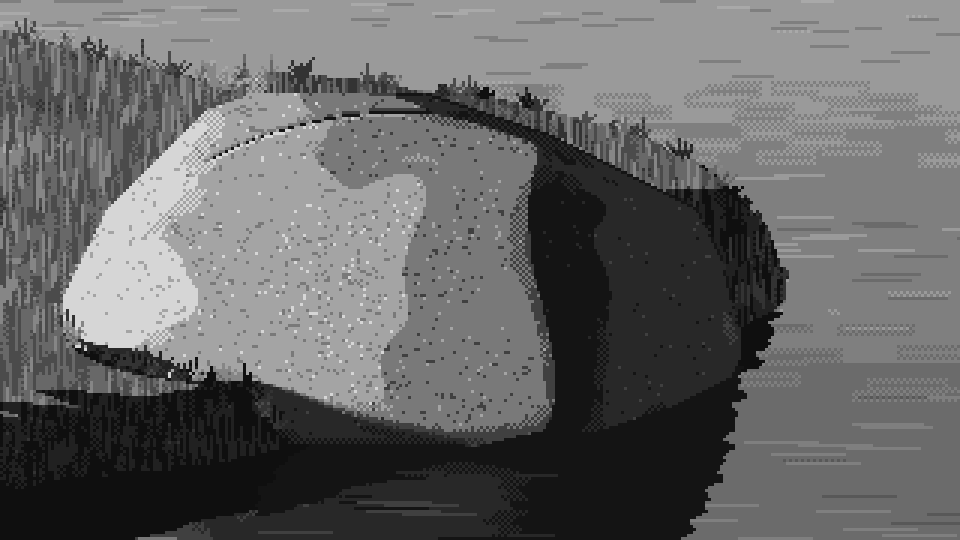
Lit from the right (left), and the left-lit frame in grey (right), so you can check it against the target at the top of the page.
I've only rendered these four frames this way, so the framing hasn't been through the full parameter sheet. Looking at them honestly:
- The grain is finer than the grey study's. A rendered pixel is half the size relative to the boulder, so the flecks, which are one pixel each, look denser and finer. If you want the chunkier grain of the target, lower the fleck density (try halving 0.075) rather than making the pixels bigger.
- The joint crack reads as a dotted line, like stitching, on the left-lit boulder. At this size a joint needs to be two pixels wide or left out.
- The back-lit shadow side is a big, nearly empty dark plane. "Keep the shadow simple" taken to its limit. The rim and the glitter carry the picture, but a bit of reflected light low on the form would help.
- On the right-lit boulder, the lit face's mottle turns into camouflage patches. Lower the mottle (0.6 → 0.4) when a lit face fills this much of the frame.
The recipe, in code:
buf = drawing.finish(render_buffers(P, 640, 360)) # twice the pixels, same lens
idx = Painter(buf, seed=seed).paint(...) # every mark sized for the finer pixels
ys, xs = np.nonzero(buf["mat"] == BOULDER)
x0 = int(np.clip(xs.mean() - 0.42 * 320, 0, 320)) # boulder a little left of centre
y0 = int(np.clip(ys.mean() - 0.5 * 180, 0, 180))
frame = idx[y0:y0 + 180, x0:x0 + 320] # still 320×180, still ≤ 32 colours
Two more habits for keeping what the grey study had:
- Compare every later version with your best intermediate at the same crop. Cleanup passes (contour snapping, stray removal, calmer water) are each right on their own, and each one removes a little accident. I never put my cleaned version next to the rough one at the same crop. Do.
- Keep the grey version running alongside the colour one to the very end. If the grey stops convincing you, the colour won't save it.
Starting settings
These are the settings I'd start from. All distances are in metres, and values are in the 0–1 plan of step 1.
| what | setting |
|---|---|
| frame | 320×180, shown at 3× nearest-neighbour; palette ≤ 32 |
| camera | 9–10° down, horizontal field of view 52°; "close" ≈ 2.7 boulder widths |
| sun | 9° up for dusk (12° for form studies); "left" at 22° azimuth, a little in front of pure side light |
| greys | 0.07, 0.17, 0.27 | 0.52, 0.70, 0.90 |
| value model | light_gamma 0.85, core 0.55, bounce 0.95, ao_power 1.4, contact 0.3, sky fill 0.35 on rock |
| quantizer | 2×2 checker, strength 0.5, flat_snap 0.08–0.1 |
| AO | 5 samples, weights ×0.7, scale ≈ 0.02–0.025 × boulder size, normalised by total height |
| boulder | 14 points + 8-point waist ring; radii 1.0–1.18 / 0.62–0.8 / 0.82–1.0 × half-size; sink 0.38; weathering radius 0.045–0.075 × size; 2 spalls; swell 0.022 × size; ≤ 1 tapered joint |
| granite marks | ridge +0.8, crease −0.9, mottle ±0.6, dark flecks 7.5% × patch density in light, 2% in shadow |
| grass | 20 cm strokes; 30% at −1.6, 16% at −0.9, 16% at +0.9; tufts of 3–6 blades, 1:2 to 1:4 leans |
| rim (back light) | silhouette to step 4.8 (3.6 turning away), inner pixel 3.2 |
| contours | σ 1.0, polygon tolerance 0.75, snap to flat / 4:1 / 3:1 / 2:1 / 1:1 and the steep mirrors |
Where this stops
What this method doesn't do, so you know where to push:
- Texture across large areas. Ferrari's surfaces vibrate everywhere; dither is a texture for him, not only a transition. Mine does texture on the boulder and grass and leaves the water and sky as flat fields.
- Big rounded mounds in the bank. I never got a grass hummock to turn the way his island does, through long checker gradients.
- Small hull facets. The hull boulder shows its terminator ridge clearly and its small facets hardly at all. Stronger plane-edge marks (step 7) are the place to push, not more geometry.
The code is all in my study folder: valuemodel.py, core.py (the quantizer and ray-marcher), geometry.py (HullBoulder), paint.py (marks), lines.py (contours), palette.py and method.py.